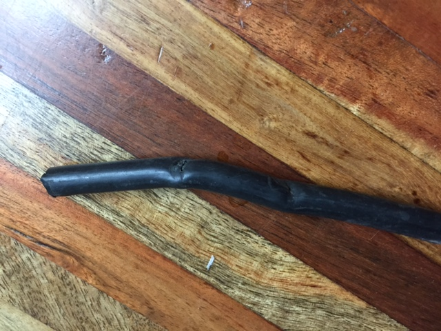

[Date Prev][Date Next][Thread Prev][Thread Next][Date Index][Thread Index]
Re: [NCDXC Chat] Coax assembly assistance
This is what I found this morning but I think may not be the only culprit as I am sure my connectors need replacing as well. It will also be nice to clean up the backyard because the 150' run was way too long (so wife and son will appreciate it too).

I appreciate all the offers for help and elmering. This club is awesome!!!
Thanks & 73,
Keith
AK6ZZ
Sent from my iPhone
> On Jan 9, 2015, at 5:13 PM, Kevin Rowett via Chat <chat@ncdxc.org> wrote:
>
>
>>
>> I've had so many pre-made cable assemblies fail that I'm leery of them.
>> They are usually crimped incorrectly. Connectors have literally fallen off
>> the coax jumper. Inspection reveals the problems above.
>
>
> yea, I won’t buy pre-made cable assemblies.
>
> KR K6TD
>
>
>
> _______________________________________________
> Chat mailing list
> Chat@ncdxc.org
> http://mail.ncdxc.org/mailman/listinfo/chat_ncdxc.org
> Message delivered to ak6zz@hotmail.com
{kind=link}